3D: stage-2 run 2 gives the best geometry so far: CD 0.0513 vs 0.0582 with the stock stage 2 and 0.0601 for v2; precision 0.849 vs 0.812. 2D: it is clearly worse at the held-out views (2D completeness 0.911 vs 0.977, LPIPS 0.580 vs 0.495). The gallery shows why: flat surfaces (walls, doors) come out perforated, as strips with gaps; its mesh has a median 63% of the stock stage 2's surface area. The 3D metrics barely see the holes: a GT point in a gap a few tens of cm wide still finds a strip edge within the 10 cm threshold, while the removed doubled layers raise precision. 2D completeness (the share of GT-visible pixels the prediction covers at all) does see them.
| run | CD ↓ | acc ↓ | compl ↓ | P ↑ | R ↑ | F@10 ↑ | NC ↑ |
|---|---|---|---|---|---|---|---|
| GenRecon | 0.0657 | 0.0629 | 0.0686 | 0.786 | 0.857 | 0.817 | 0.785 |
| Complete3D-v2 (stock stage 2) | 0.0601 | 0.0613 | 0.0590 | 0.793 | 0.899 | 0.840 | 0.797 |
| Complete3D-v2 + stage-2 run 1 | 0.0579 | 0.0590 | 0.0568 | 0.795 | 0.901 | 0.842 | 0.804 |
| D36 run 2 + stock stage 2 | 0.0582 | 0.0595 | 0.0568 | 0.812 | 0.899 | 0.852 | 0.785 |
| D36 run 2 + stage-2 run 2 | 0.0513 | 0.0519 | 0.0507 | 0.849 | 0.914 | 0.880 | 0.782 |
CD = ½(accuracy + completeness), metres; P / R / F at 10 cm; predictions envelope-culled against the laser fusion (15 cm), 200 k area samples. Every row is scored on the same 136 scenes.
| run | depth MAE ↓ | normal° ↓ | 2D compl ↑ | LPIPS ↓ |
|---|---|---|---|---|
| GenRecon | 0.1110 | 22.77 | 0.987 | 0.484 |
| Complete3D-v2 (stock stage 2) | 0.0955 | 22.32 | 0.988 | 0.481 |
| Complete3D-v2 + stage-2 run 1 | 0.0954 | 23.42 | 0.979 | 0.479 |
| D36 run 2 + stock stage 2 | 0.0997 | 23.62 | 0.977 | 0.495 |
| D36 run 2 + stage-2 run 2 | 0.1082 | 26.12 | 0.911 | 0.580 |
Rendered at the DSLR test frames (half resolution). 2D completeness = the share of pixels where the GT mesh is visible that the prediction covers at all: holes in the mesh show up here.
| run | obs CD ↓ | obs P ↑ | obs R ↑ | obs FP rate ↓ | unobs CD ↓ | unobs P ↑ | unobs R ↑ |
|---|---|---|---|---|---|---|---|
| GenRecon | 0.0633 | 0.798 | 0.865 | 0.202 | 0.0702 | 0.746 | 0.846 |
| Complete3D-v2 (stock stage 2) | 0.0571 | 0.805 | 0.912 | 0.195 | 0.0667 | 0.753 | 0.870 |
| Complete3D-v2 + stage-2 run 1 | 0.0549 | 0.806 | 0.915 | 0.194 | 0.0651 | 0.755 | 0.871 |
| D36 run 2 + stock stage 2 | 0.0556 | 0.830 | 0.905 | 0.170 | 0.0655 | 0.747 | 0.881 |
| D36 run 2 + stage-2 run 2 | 0.0488 | 0.865 | 0.920 | 0.135 | 0.0601 | 0.782 | 0.900 |
A GT sample is observed if any of the 8 input views sees it (common mask; 81% of the GT on average). Each prediction point takes the region of its nearest GT sample. FP rate = 1 − precision in the observed region.
| run | surface voxels / GT (median) | mesh area / GT (median) |
|---|---|---|
| GenRecon | — | — |
| Complete3D-v2 (stock stage 2) | 1.72 | 2.85 |
| Complete3D-v2 + stage-2 run 1 | 1.72 | — |
| D36 run 2 + stock stage 2 | 2.02 | 3.16 |
| D36 run 2 + stage-2 run 2 | 2.02 | 2.00 |
Surface voxels: the final mesh voxelised on a 32³-per-chunk lattice vs the GT (coarse extent: a thickened or doubled surface in the same voxels counts once). Mesh area: total triangle area vs the GT laser mesh (fine: doubled layers count twice, holes count as missing area).
Six scenes: the two largest 2D-completeness drops, the two largest 3D gains, two typical. Textured renders at official test frames (not input views); black = no surface.
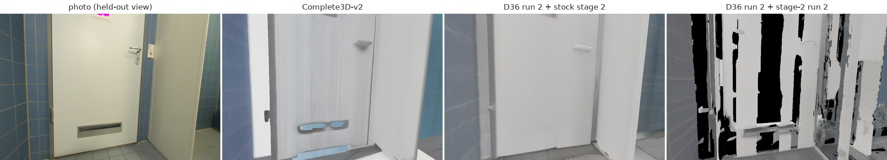
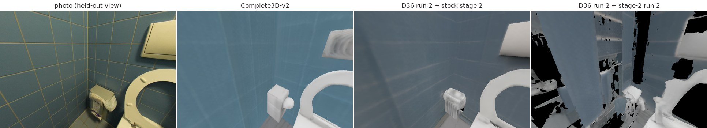
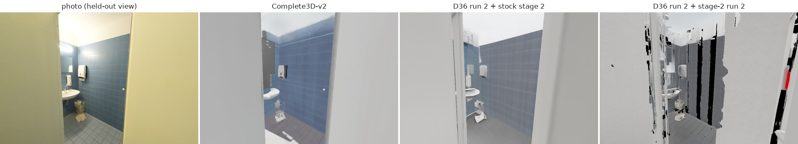
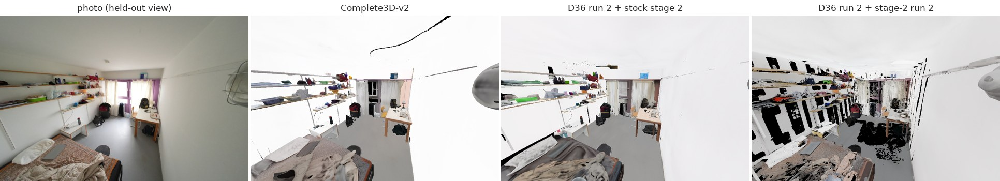
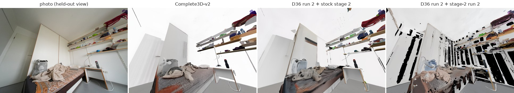
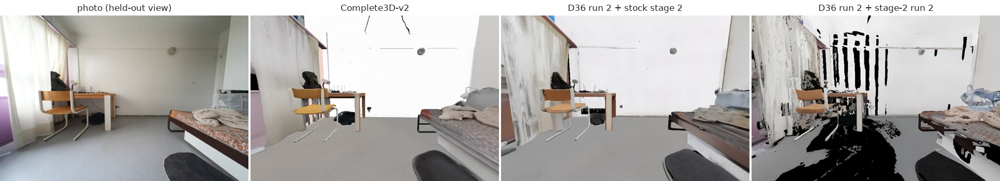
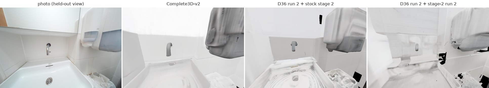
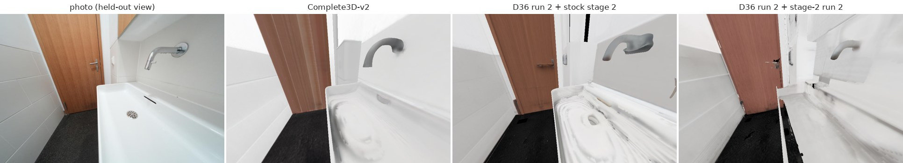
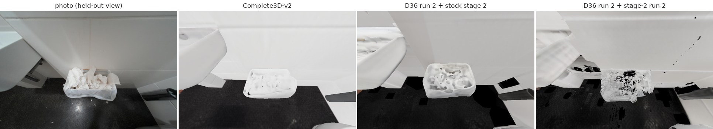
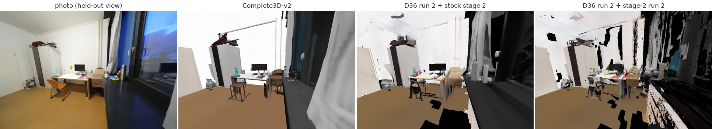
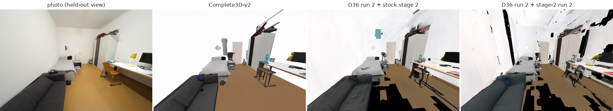
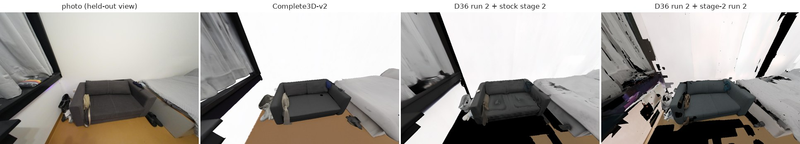
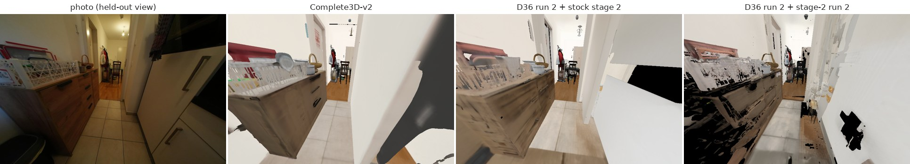
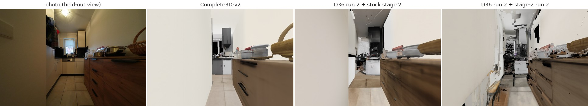
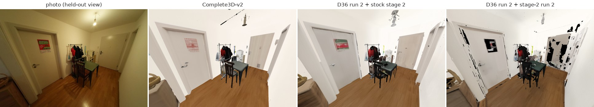
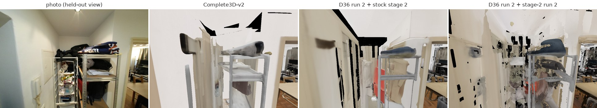
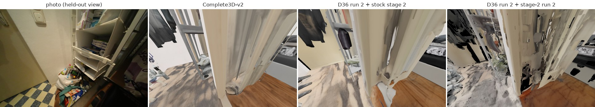
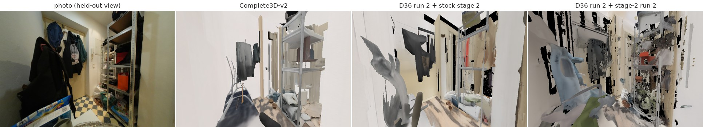
| scene | CD Complete3D-v2 | CD D36 run 2 + stock stage 2 | CD D36 run 2 + stage-2 run 2 | 2D compl Complete3D-v2 | 2D compl D36 run 2 + stock stage 2 | 2D compl D36 run 2 + stage-2 run 2 | LPIPS Complete3D-v2 | LPIPS D36 run 2 + stock stage 2 | LPIPS D36 run 2 + stage-2 run 2 |
|---|---|---|---|---|---|---|---|---|---|
| dbd2a5961f | 0.0740 | 0.0480 | 0.0266 | 1.000 | 0.996 | 0.838 | 0.373 | 0.380 | 0.585 |
| dbd97b5bca | 0.0521 | 0.0592 | 0.0498 | 1.000 | 0.918 | 0.828 | 0.522 | 0.568 | 0.673 |
| dc204f59ae | 0.0842 | 0.0859 | 0.0700 | 0.999 | 0.987 | 0.873 | 0.500 | 0.495 | 0.593 |
| dc263dfbf0 | 0.0579 | 0.0703 | 0.0577 | 0.999 | 0.999 | 0.935 | 0.430 | 0.487 | 0.619 |
| dc5f00843f | 0.0564 | 0.0489 | 0.0473 | 0.996 | 0.997 | 0.963 | 0.381 | 0.422 | 0.527 |
| dd636ce603 | 0.0640 | 0.0786 | 0.0603 | 0.966 | 0.862 | 0.773 | 0.495 | 0.526 | 0.665 |
| dd685be466 | 0.0465 | 0.0367 | 0.0359 | 0.995 | 0.964 | 0.844 | 0.451 | 0.463 | 0.632 |
| de3c77cecd | 0.0958 | 0.0786 | 0.0742 | 0.969 | 0.988 | 0.893 | 0.494 | 0.506 | 0.598 |
| de5881aa12 | 0.0485 | 0.0467 | 0.0405 | 1.000 | 0.981 | 0.909 | 0.416 | 0.441 | 0.582 |
| de7dc9993f | 0.0530 | 0.0524 | 0.0467 | 0.999 | 0.984 | 0.945 | 0.378 | 0.381 | 0.463 |
| de83a9c2d7 | 0.0534 | 0.0512 | 0.0459 | 0.997 | 0.984 | 0.914 | 0.325 | 0.400 | 0.520 |
| deb1867829 | 0.0567 | 0.0506 | 0.0517 | 0.999 | 0.996 | 0.937 | 0.442 | 0.443 | 0.534 |
| dec0b11090 | 0.0613 | 0.0631 | 0.0489 | 0.986 | 0.981 | 0.901 | 0.443 | 0.495 | 0.607 |
| defd3457db | 0.1154 | 0.1143 | 0.1060 | 0.950 | 0.951 | 0.884 | 0.499 | 0.534 | 0.615 |
| dfa70fb232 | 0.0644 | 0.0755 | 0.0622 | 0.967 | 0.970 | 0.937 | 0.479 | 0.494 | 0.571 |
| dfac5b38df | 0.0453 | 0.0440 | 0.0366 | 0.997 | 0.998 | 0.959 | 0.468 | 0.480 | 0.535 |
| e01b287af5 | 0.0437 | 0.0427 | 0.0344 | 0.998 | 0.986 | 0.895 | 0.433 | 0.443 | 0.583 |
| e050c15a8d | 0.1932 | 0.0942 | 0.0807 | 0.764 | 0.950 | 0.897 | 0.631 | 0.610 | 0.647 |
| e0abd740ba | 0.0360 | 0.0464 | 0.0435 | 0.999 | 0.998 | 0.975 | 0.372 | 0.409 | 0.467 |
| e0d1ed2159 | 0.0419 | 0.0320 | 0.0259 | 1.000 | 0.996 | 0.987 | 0.441 | 0.423 | 0.440 |
| e0de253456 | 0.0396 | 0.0402 | 0.0399 | 0.995 | 0.995 | 0.920 | 0.609 | 0.590 | 0.660 |
| e1aa584dd5 | 0.0428 | 0.0421 | 0.0391 | 0.998 | 0.992 | 0.925 | 0.470 | 0.480 | 0.597 |
| e1b1d9de55 | 0.0540 | 0.0767 | 0.0693 | 0.999 | 0.958 | 0.897 | 0.492 | 0.498 | 0.575 |
| e1fb8626c8 | 0.0840 | 0.1074 | 0.0798 | 0.999 | 0.952 | 0.908 | 0.371 | 0.402 | 0.516 |
| e2caaaf5b5 | 0.0525 | 0.0481 | 0.0492 | 0.998 | 0.993 | 0.938 | 0.457 | 0.471 | 0.529 |
| e35232b92f | 0.0513 | 0.0492 | 0.0408 | 1.000 | 0.955 | 0.922 | 0.538 | 0.575 | 0.654 |
| e398684d27 | 0.0524 | 0.0525 | 0.0543 | 1.000 | 0.979 | 0.950 | 0.540 | 0.501 | 0.553 |
| e3ad7115db | 0.0521 | 0.0500 | 0.0410 | 0.995 | 0.992 | 0.892 | 0.483 | 0.490 | 0.592 |
| e3b3b0d0c7 | 0.2294 | 0.1261 | 0.1101 | 0.856 | 0.942 | 0.913 | 0.638 | 0.658 | 0.681 |
| e3c1da58dd | 0.0690 | 0.0620 | 0.0499 | 0.996 | 1.000 | 0.964 | 0.411 | 0.392 | 0.472 |
| e3c39f4aea | 0.0564 | 0.0549 | 0.0482 | 0.989 | 0.957 | 0.912 | 0.488 | 0.540 | 0.582 |
| e3ecd49e2b | 0.0502 | 0.0500 | 0.0538 | 0.976 | 0.984 | 0.892 | 0.490 | 0.485 | 0.554 |
| e3ef8b690b | 0.0507 | 0.0560 | 0.0531 | 0.976 | 0.988 | 0.962 | 0.433 | 0.415 | 0.531 |
| e4007ff6b5 | 0.0621 | 0.0619 | 0.0593 | 1.000 | 0.998 | 0.941 | 0.535 | 0.527 | 0.555 |
| e4e625a3e4 | 0.0466 | 0.0509 | 0.0414 | 0.997 | 0.981 | 0.923 | 0.443 | 0.416 | 0.473 |
| e4fb2a623b | 0.0499 | 0.0516 | 0.0440 | 0.997 | 0.990 | 0.898 | 0.429 | 0.462 | 0.524 |
| e51b753e48 | 0.0542 | 0.0546 | 0.0415 | 0.991 | 0.959 | 0.831 | 0.588 | 0.600 | 0.696 |
| e5a769dbf5 | 0.0631 | 0.0424 | 0.0370 | 0.993 | 0.989 | 0.872 | 0.332 | 0.404 | 0.600 |
| e6372539da | 0.0520 | 0.0516 | 0.0426 | 0.996 | 0.984 | 0.907 | 0.460 | 0.474 | 0.538 |
| e6671918c8 | 0.0500 | 0.0483 | 0.0405 | 0.998 | 0.990 | 0.928 | 0.586 | 0.601 | 0.643 |
| e667e09fe6 | 0.0601 | 0.0676 | 0.0570 | 0.991 | 0.959 | 0.885 | 0.509 | 0.536 | 0.619 |
| e69064f2f3 | 0.0546 | 0.0538 | 0.0490 | 0.977 | 0.985 | 0.898 | 0.555 | 0.573 | 0.693 |
| e7ac609391 | 0.0661 | 0.0708 | 0.0658 | 0.990 | 0.968 | 0.939 | 0.723 | 0.755 | 0.795 |
| e7af285f7d | 0.0745 | 0.0721 | 0.0659 | 0.991 | 0.957 | 0.929 | 0.560 | 0.591 | 0.627 |
| e7ccd75e5d | 0.0507 | 0.0476 | 0.0431 | 0.998 | 0.997 | 0.921 | 0.435 | 0.460 | 0.549 |
| e7d7e7799d | 0.0493 | 0.0449 | 0.0426 | 0.995 | 0.994 | 0.915 | 0.523 | 0.519 | 0.616 |
| e814070fd4 | 0.0496 | 0.0499 | 0.0365 | 1.000 | 0.974 | 0.911 | 0.372 | 0.408 | 0.542 |
| e81c8b3eec | 0.0437 | 0.0449 | 0.0403 | 0.997 | 0.999 | 0.952 | 0.482 | 0.519 | 0.563 |
| e86c6742b9 | 0.0766 | 0.0571 | 0.0502 | 1.000 | 0.990 | 0.906 | 0.406 | 0.412 | 0.589 |
| e87f1ebcac | 0.0608 | 0.0608 | 0.0497 | 0.976 | 0.981 | 0.884 | 0.560 | 0.525 | 0.569 |
| e898c76c1f | 0.0569 | 0.0494 | 0.0395 | 0.995 | 0.984 | 0.950 | 0.371 | 0.408 | 0.505 |
| e8e81396b6 | 0.0417 | 0.0407 | 0.0420 | 0.994 | 0.998 | 0.947 | 0.538 | 0.529 | 0.599 |
| e8ea9b4da8 | 0.0485 | 0.0446 | 0.0400 | 0.998 | 0.993 | 0.858 | 0.598 | 0.619 | 0.797 |
| e909f8213d | 0.0460 | 0.0466 | 0.0373 | 0.983 | 0.999 | 0.954 | 0.505 | 0.504 | 0.552 |
| e91722b5a3 | 0.0692 | 0.0745 | 0.0586 | 0.994 | 0.981 | 0.895 | 0.467 | 0.470 | 0.569 |
| e93cd5230e | 0.0631 | 0.0529 | 0.0520 | 0.992 | 0.998 | 0.924 | 0.424 | 0.410 | 0.524 |
| e945643bef | 0.0454 | 0.0597 | 0.0488 | 0.999 | 0.997 | 0.947 | 0.419 | 0.441 | 0.515 |
| e9ac2fc517 | 0.0770 | 0.0825 | 0.0733 | 0.967 | 0.972 | 0.913 | 0.571 | 0.571 | 0.630 |
| e9e16b6043 | 0.0531 | 0.0386 | 0.0355 | 1.000 | 0.919 | 0.846 | 0.548 | 0.574 | 0.666 |
| ea3b3710a2 | 0.0451 | 0.0401 | 0.0365 | 0.999 | 0.965 | 0.933 | 0.547 | 0.537 | 0.585 |
| ea42cd27e6 | 0.0460 | 0.0501 | 0.0460 | 0.996 | 0.978 | 0.861 | 0.405 | 0.428 | 0.606 |
| eaa6c90310 | 0.0463 | 0.0408 | 0.0411 | 0.997 | 0.976 | 0.917 | 0.542 | 0.519 | 0.584 |
| eaab7bcc15 | 0.0609 | 0.0529 | 0.0452 | 0.984 | 0.989 | 0.911 | 0.515 | 0.551 | 0.614 |
| eab5494dca | 0.0587 | 0.0599 | 0.0529 | 0.992 | 0.994 | 0.940 | 0.550 | 0.522 | 0.582 |
| eb4bc76767 | 0.0521 | 0.0428 | 0.0453 | 0.991 | 0.990 | 0.890 | 0.558 | 0.565 | 0.656 |
| eb8ef9b4cc | 0.0379 | 0.0389 | 0.0379 | 0.999 | 0.971 | 0.946 | 0.406 | 0.449 | 0.488 |
| ebc200e928 | 0.0519 | 0.0432 | 0.0337 | 1.000 | 0.998 | 0.950 | 0.446 | 0.462 | 0.519 |
| ec2cb8dae1 | 0.0567 | 0.0516 | 0.0426 | 0.997 | 0.987 | 0.948 | 0.439 | 0.440 | 0.555 |
| ec614d4e30 | 0.0489 | 0.0658 | 0.0546 | 1.000 | 0.986 | 0.913 | 0.433 | 0.430 | 0.515 |
| ec9ff6051d | 0.0471 | 0.0537 | 0.0422 | 0.998 | 0.921 | 0.870 | 0.507 | 0.528 | 0.605 |
| ed2216380b | 0.0644 | 0.0512 | 0.0415 | 0.999 | 0.997 | 0.963 | 0.394 | 0.409 | 0.476 |
| edbf65c385 | 0.0560 | 0.0353 | 0.0312 | 1.000 | 0.992 | 0.883 | 0.519 | 0.496 | 0.643 |
| edced53026 | 0.0474 | 0.0535 | 0.0457 | 0.997 | 0.997 | 0.918 | 0.456 | 0.468 | 0.553 |
| eea4ad9c04 | 0.0766 | 0.0716 | 0.0611 | 0.972 | 0.979 | 0.922 | 0.551 | 0.545 | 0.631 |
| eee7eef8e5 | 0.0779 | 0.0760 | 0.0666 | 0.881 | 0.878 | 0.850 | 0.508 | 0.512 | 0.597 |
| eeeb9836b8 | 0.0450 | 0.0505 | 0.0428 | 0.976 | 0.980 | 0.954 | 0.446 | 0.517 | 0.553 |
| ef18cf0708 | 0.0782 | 0.1345 | 0.1142 | 0.999 | 0.968 | 0.936 | 0.449 | 0.466 | 0.528 |
| ef25276c25 | 0.0569 | 0.0580 | 0.0451 | 0.989 | 0.973 | 0.876 | 0.504 | 0.521 | 0.595 |
| ef60db4e8c | 0.0589 | 0.0702 | 0.0559 | 0.997 | 0.984 | 0.875 | 0.520 | 0.523 | 0.577 |
| ef69d58016 | 0.0473 | 0.0457 | 0.0463 | 0.999 | 0.988 | 0.827 | 0.579 | 0.585 | 0.732 |
| ef9428c5cd | 0.0643 | 0.0487 | 0.0464 | 0.991 | 0.989 | 0.892 | 0.419 | 0.468 | 0.586 |
| f07340dfea | 0.0472 | 0.0508 | 0.0478 | 0.994 | 0.987 | 0.945 | 0.411 | 0.435 | 0.512 |
| f19ca0a52e | 0.0409 | 0.0571 | 0.0632 | 1.000 | 0.840 | 0.728 | 0.385 | 0.502 | 0.617 |
| f1e01af60a | 0.0479 | 0.0528 | 0.0531 | 0.996 | 0.939 | 0.915 | 0.474 | 0.507 | 0.556 |
| f1efd25854 | 0.0450 | 0.0393 | 0.0334 | 1.000 | 0.978 | 0.913 | 0.432 | 0.382 | 0.493 |
| f20ccd91de | 0.0500 | 0.0521 | 0.0422 | 0.999 | 0.943 | 0.894 | 0.537 | 0.575 | 0.627 |
| f248c2bcdc | 0.0772 | 0.0674 | 0.0639 | 0.935 | 0.983 | 0.914 | 0.574 | 0.587 | 0.650 |
| f25f5e6f63 | 0.0592 | 0.0591 | 0.0530 | 0.984 | 0.997 | 0.944 | 0.498 | 0.509 | 0.620 |
| f2dc06b1d2 | 0.0394 | 0.0388 | 0.0376 | 1.000 | 0.997 | 0.939 | 0.552 | 0.509 | 0.623 |
| f2e6c43543 | 0.0805 | 0.0741 | 0.0631 | 0.970 | 0.974 | 0.901 | 0.559 | 0.525 | 0.640 |
| f2ec1f6a04 | 0.0490 | 0.0472 | 0.0454 | 0.996 | 0.993 | 0.891 | 0.400 | 0.413 | 0.539 |
| f311090fa6 | 0.0507 | 0.0486 | 0.0415 | 0.992 | 0.991 | 0.906 | 0.501 | 0.501 | 0.608 |
| f33e242463 | 0.0597 | 0.0742 | 0.0406 | 1.000 | 0.979 | 0.977 | 0.393 | 0.402 | 0.424 |
| f34d532901 | 0.0618 | 0.0567 | 0.0436 | 0.996 | 0.989 | 0.899 | 0.461 | 0.466 | 0.594 |
| f3685d06a9 | 0.0436 | 0.0386 | 0.0420 | 1.000 | 0.997 | 0.809 | 0.553 | 0.565 | 0.670 |
| f368a1f730 | 0.0400 | 0.0366 | 0.0327 | 1.000 | 0.998 | 0.942 | 0.509 | 0.519 | 0.564 |
| f36e3e1e53 | 0.0492 | 0.0494 | 0.0422 | 0.998 | 0.979 | 0.892 | 0.483 | 0.502 | 0.641 |
| f38b0108a1 | 0.0646 | 0.0725 | 0.0658 | 0.994 | 0.981 | 0.938 | 0.485 | 0.485 | 0.549 |
| f3d64c30f8 | 0.1693 | 0.1628 | 0.1540 | 0.971 | 0.964 | 0.896 | 0.495 | 0.516 | 0.597 |
| f3f016ba3f | 0.0436 | 0.0468 | 0.0387 | 0.997 | 0.978 | 0.939 | 0.395 | 0.461 | 0.505 |
| f47ec86138 | 0.0706 | 0.0600 | 0.0471 | 0.972 | 0.993 | 0.953 | 0.433 | 0.439 | 0.559 |
| f4c5b0646f | 0.0427 | 0.0354 | 0.0375 | 1.000 | 0.967 | 0.921 | 0.437 | 0.475 | 0.594 |
| f5401524e5 | 0.0418 | 0.0408 | 0.0350 | 1.000 | 0.978 | 0.886 | 0.527 | 0.522 | 0.565 |
| f5726eeeb2 | 0.0459 | 0.0421 | 0.0421 | 0.996 | 0.993 | 0.842 | 0.510 | 0.511 | 0.596 |
| f576071590 | 0.0493 | 0.0577 | 0.0434 | 1.000 | 0.959 | 0.888 | 0.448 | 0.486 | 0.602 |
| f6659a3107 | 0.0546 | 0.0696 | 0.0525 | 0.995 | 0.974 | 0.950 | 0.411 | 0.446 | 0.510 |
| f6a9b64a0d | 0.0516 | 0.0406 | 0.0369 | 0.989 | 0.971 | 0.909 | 0.589 | 0.576 | 0.658 |
| f7d34e6706 | 0.0623 | 0.0774 | 0.0655 | 0.991 | 0.994 | 0.922 | 0.525 | 0.546 | 0.625 |
| f7da3f0714 | 0.0515 | 0.0475 | 0.0449 | 0.999 | 0.991 | 0.908 | 0.490 | 0.484 | 0.546 |
| f8062cb7ce | 0.1284 | 0.1276 | 0.1166 | 0.994 | 0.994 | 0.961 | 0.431 | 0.445 | 0.476 |
| f847086d15 | 0.0426 | 0.0456 | 0.0474 | 1.000 | 0.884 | 0.845 | 0.415 | 0.476 | 0.557 |
| f8d5147d1d | 0.0383 | 0.0486 | 0.0438 | 1.000 | 0.995 | 0.979 | 0.341 | 0.359 | 0.427 |
| f8e13ab4ae | 0.0419 | 0.0396 | 0.0387 | 0.999 | 0.996 | 0.929 | 0.423 | 0.421 | 0.567 |
| f8eac0ad24 | 0.0431 | 0.0448 | 0.0382 | 0.995 | 0.983 | 0.886 | 0.463 | 0.477 | 0.658 |
| f8f12e4e6b | 0.0470 | 0.0658 | 0.0603 | 0.996 | 0.942 | 0.917 | 0.466 | 0.505 | 0.535 |
| f9397af4cb | 0.0538 | 0.0488 | 0.0400 | 0.998 | 0.970 | 0.951 | 0.453 | 0.484 | 0.538 |
| f97de2c3e9 | 0.0637 | 0.0576 | 0.0509 | 0.989 | 0.980 | 0.917 | 0.585 | 0.591 | 0.677 |
| f9f95681fd | 0.0373 | 0.0352 | 0.0446 | 1.000 | 0.994 | 0.922 | 0.462 | 0.464 | 0.523 |
| faba6e97d7 | 0.0454 | 0.0353 | 0.0393 | 0.999 | 0.996 | 0.893 | 0.417 | 0.438 | 0.564 |
| faec2f0468 | 0.0945 | 0.0887 | 0.0796 | 0.967 | 0.991 | 0.951 | 0.645 | 0.650 | 0.733 |
| fb05e13ad1 | 0.0452 | 0.0463 | 0.0417 | 0.998 | 0.986 | 0.855 | 0.436 | 0.477 | 0.557 |
| fb152519ad | 0.0729 | 0.0790 | 0.0688 | 0.975 | 0.932 | 0.894 | 0.575 | 0.576 | 0.655 |
| fb564c935d | 0.0558 | 0.0593 | 0.0461 | 0.998 | 0.998 | 0.944 | 0.448 | 0.446 | 0.483 |
| fb5a96b1a2 | 0.0601 | 0.0596 | 0.0501 | 0.988 | 0.979 | 0.908 | 0.440 | 0.448 | 0.532 |
| fb893ffaf3 | 0.0941 | 0.0822 | 0.0676 | 0.952 | 0.964 | 0.943 | 0.603 | 0.598 | 0.669 |
| fb9b4c2f15 | 0.0446 | 0.0370 | 0.0371 | 0.993 | 0.996 | 0.831 | 0.436 | 0.415 | 0.590 |
| fc2875ea52 | 0.0713 | 0.0696 | 0.0530 | 0.983 | 1.000 | 0.932 | 0.515 | 0.554 | 0.643 |
| fc85fb414c | 0.0479 | 0.0412 | 0.0328 | 1.000 | 0.992 | 0.953 | 0.413 | 0.412 | 0.477 |
| fd361ab85f | 0.0572 | 0.0798 | 0.0762 | 0.998 | 0.941 | 0.909 | 0.486 | 0.509 | 0.548 |
| fd8560cfd6 | 0.0494 | 0.0580 | 0.0550 | 0.989 | 0.949 | 0.910 | 0.483 | 0.503 | 0.530 |
| fde8a3b4c0 | 0.0827 | 0.0821 | 0.0836 | 0.973 | 0.987 | 0.926 | 0.553 | 0.569 | 0.626 |
| fdf7f5cd5d | 0.0636 | 0.0581 | 0.0520 | 1.000 | 0.991 | 0.945 | 0.428 | 0.429 | 0.513 |
| fe1733741f | 0.0825 | 0.0827 | 0.0738 | 0.992 | 0.987 | 0.956 | 0.573 | 0.585 | 0.586 |
| fe3fc057a1 | 0.0490 | 0.0488 | 0.0457 | 0.998 | 0.988 | 0.883 | 0.517 | 0.508 | 0.613 |
| fe5fe0a8a4 | 0.1211 | 0.0647 | 0.0616 | 0.948 | 0.966 | 0.914 | 0.498 | 0.497 | 0.589 |
| ff17657f71 | 0.0387 | 0.0386 | 0.0421 | 1.000 | 0.998 | 0.926 | 0.393 | 0.445 | 0.490 |
Source: experiments/genrecon_eval/results/<run>/scannetpp/{summary.csv, 2d/summary_2d.csv, viewsplit/}, diag_ss_voxel_counts_s2r2_arm1.csv, diag_mesh_area_s2r2.csv; table values in data/metrics.json.